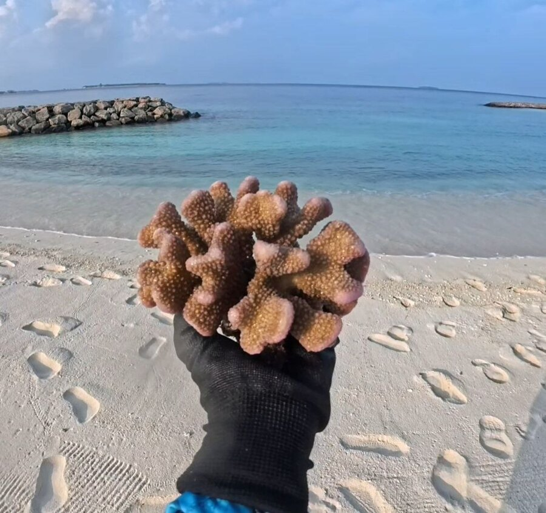
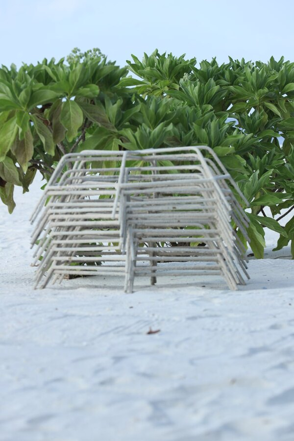
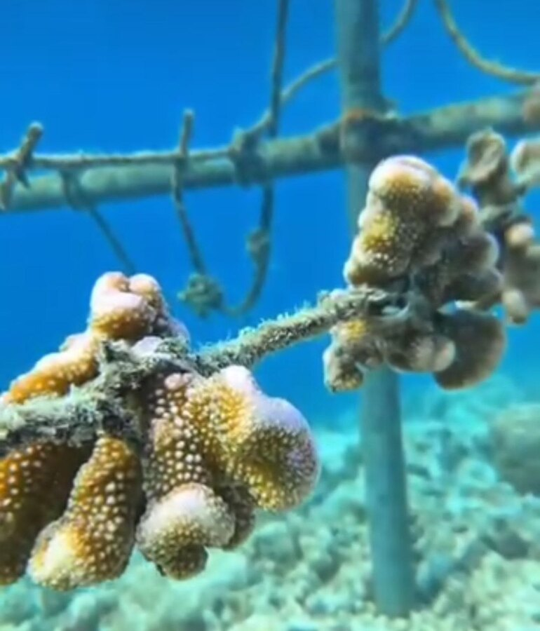
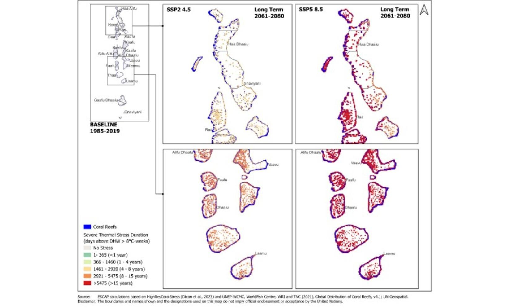
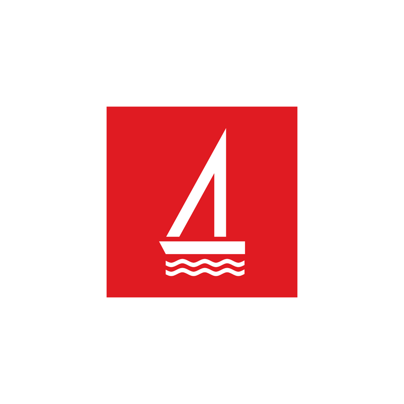
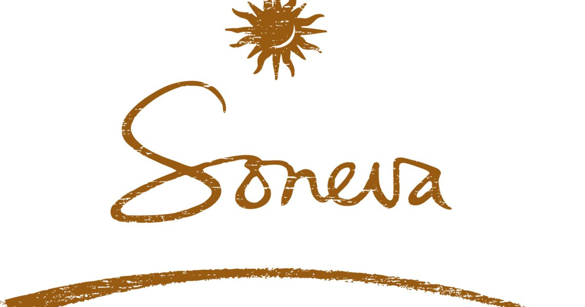

Restore and protect
Restore and protect marine ecosystems through practical, community-led action.
Muraka Farm is a community-led environmental organisation based in Dharavandhoo, in Baa Atoll's UNESCO Biosphere Reserve. We restore coral reefs, build local conservation capacity and connect communities with the marine environment through restoration, education and research.
Muraka Farm is a community-led environmental organisation based in Dharavandhoo, Baa Atoll. We work to restore coral reefs, build local conservation capacity, educate young people, and strengthen community stewardship of the marine environment.
Restore and protect marine ecosystems through practical, community-led action.
Healthy reefs cared for by the communities whose lives and futures depend on them.
Restoration · Education · Research · Community
We lose protection. Biodiversity. Livelihoods. A part of home.
In the Maldives, the reef is part of everyday life. It supports the fish we eat, protects our islands from waves and erosion, creates the beaches visitors travel across the world to see, and provides habitat for an extraordinary diversity of marine life.
But reefs are being pushed beyond their ability to recover. Rising ocean temperatures, repeated bleaching events and local pressures can turn a living reef into bare structure within a short time — while natural recovery can take years.
For a small island community like Dharavandhoo, protecting the reef means protecting our shoreline, our livelihoods, our biodiversity and the future of the generations who will call this island home.
“We are not restoring coral simply to rebuild a reef. We are protecting a living system that our island depends on.”
— Muraka FarmCoral restoration is a patient, hands-on cycle that moves from responsible fragment rescue and nursery care to reef outplanting and long-term monitoring.
We rescue naturally broken, displaced, or vulnerable coral fragments that have a good chance of survival and can be responsibly used for restoration.
Fragments are secured in Muraka Farm's rope nurseries, where they are cared for and given time to establish and grow before healthy fragments are transferred onto Muraka frames for reef restoration.
Once the coral fragments are ready, healthy fragments are collected from the rope nursery and carefully attached to Muraka frames. The completed Muraka frames are then placed in suitable damaged reef areas, where the corals can continue growing and contribute to reef recovery.
We regularly monitor survival, growth, health and bleaching, using what we learn to improve our restoration methods and guide long-term reef care.
Since the project began, our team has been turning local commitment into visible reef restoration outcomes across Dharavandhoo.



Restoration activities are supported through local participation, monitoring and long-term reef stewardship.
Impact figures updated August 2026.
Muraka Farm's community-led coral restoration work in Dharavandhoo was featured by the United Nations in the Maldives in its 2026 story on extreme heat, coral reefs and reef resilience.
The UN story highlights community-based restoration initiatives led by Muraka in Dharavandhoo, including coral gardening, growing coral fragments in underwater nurseries and transplanting them to damaged reef areas.
It also features reflections from Muraka team member Ikraam Ali on coral bleaching, restoration, community participation and the importance of helping Maldivian reefs recover.

United Nations in the Maldives
09 June 2026
Community-based restoration initiatives, such as those led by Muraka in Dharavandhoo, are helping with reef recovery.Read the full story →
Community clean-ups bring students, local organisations, businesses and island stakeholders together to care for Dharavandhoo's beaches and marine environment.

A youth-led shoreline clean-up bringing Baa Atoll School Scouts into practical environmental action while encouraging responsibility for the island's beaches and surrounding ocean.

A collaborative effort involving community NGOs and local stakeholders to remove waste from the house reef and support a healthier marine environment close to the island.

A coordinated beach clean-up bringing state-owned enterprises and island stakeholders together to collect shoreline waste and reinforce shared care for Dharavandhoo's public spaces.
Explore Muraka Farm's community-led coral restoration programmes and completed reef projects in Dharavandhoo.
From Maldivian schools to international study programmes, Muraka Farm provides opportunities for students to connect marine science and conservation learning with the living reef environment of Dharavandhoo.
A small island at the heart of our work.
In the heart of the Baa Atoll UNESCO Biosphere Reserve lies Dharavandhoo — a small island surrounded by an extraordinary living world of coral reefs, lagoons, and marine life.
For Muraka Farm, this isn't simply where we work.
This is home.
Just beyond our shoreline, we restore and care for coral reefs that have supported island life for generations. These reefs protect our coast, sustain marine life, support local livelihoods, and form part of the natural heritage our community depends on.
Our restoration sites are cared for throughout the year, bringing together local hands, scientific knowledge, and a shared commitment to give damaged reefs the opportunity to recover and thrive.
And because meaningful conservation should be experienced, not hidden away, we welcome researchers, divers, students, conservationists, and curious visitors to discover the work firsthand.
From a small island can come a lasting impact.
Rooted in Dharavandhoo. Restoring reefs for generations to come.
Discover Dharavandhoo — Experiences & Adventures →
Our work grows through collaboration across Dharavandhoo, Baa Atoll and the wider conservation community.
Our work grows through collaboration with island communities, conservation organisations, researchers, educators, government institutions, local businesses and private-sector partners.
These relationships support Muraka Farm's conservation work through restoration funding, local field support and programme collaboration.

Muraka Farm was selected through the Bank of Maldives Bank Fund for a coral-restoration project in B. Dharavandhoo focused on safeguarding marine biodiversity and supporting sustainable livelihoods.
View the Bank Fund announcement →
Baa Dharavandhoo Council supports Muraka Farm through local coordination, community guidance and legal support whenever needed. Its involvement helps conservation activities connect with island priorities, navigate local requirements and move forward with the cooperation needed to create lasting benefits for Dharavandhoo's community and marine environment.

Collaborates with Muraka Farm on Dhirun's conservation and capacity-building approach, supporting the development of community-based coral reef restoration in Dharavandhoo.
View Dhirun →Liquid Salt Divers supports Muraka Farm's Dhirun programme by providing diving equipment for monitoring sessions, helping our team carry out regular in-water reef monitoring and follow-up work at the restoration site.
Their support strengthens the practical field capacity needed to monitor coral survival, growth, health and overall restoration progress over time.
Collaborates with Muraka Farm through Coral Quest, connecting Girl Guide students with coral reef education, practical restoration activities and guided marine learning.
View Coral Quest →Explore partnerships, research collaboration, field learning and community conservation opportunities with Muraka Farm.
Follow Muraka Farm for restoration updates, community activities, field learning and reef monitoring from Dharavandhoo.
See current restoration work, community participation and field updates directly from the Muraka Farm team.
View all field updates → Follow @murakafarm.drv on Instagram →Your support keeps the nursery running — from rope and rebar to the boat fuel that gets us out to the reef.
Donate to Muraka FarmDonations support Muraka Farm's coral restoration, field operations, reef monitoring and community conservation work.
From understanding the reef to helping protect it.
Muraka Farm creates hands-on learning opportunities that connect people with coral reefs, marine conservation and community-led restoration.
Our programmes combine knowledge with practical experience—helping participants understand how reefs work, the threats they face, how coral restoration is carried out, and how communities can play a role in protecting them.
Discover how coral reefs function, why they are important to Maldivian islands, and the marine life that depends on them.
Understand coral bleaching, climate change and other pressures affecting reef ecosystems—and why recovery can be difficult.
Learn how restoration works, from coral nurseries and restoration structures to coral attachment, outplanting, maintenance and monitoring.
Explore how local communities, young people and organisations can contribute to long-term reef protection.
Depending on the programme, participants may have opportunities to take part in practical activities alongside the Muraka team.
Interactive introduction to coral ecology, conservation and restoration.
Learn about restoration structures, coral nursery systems and preparation methods through practical demonstrations.
Visit or observe Muraka's restoration work and see how coral nurseries and restoration sites are managed.
Where suitable and properly arranged, participants may observe restoration activities in the water.
Programmes can be adapted to different ages, group sizes and learning objectives—from introductory reef-awareness sessions to more practical restoration-focused experiences.
Choose the programme route that best fits your group or learning objectives.
Study the reef. Contribute to its future.
Muraka Farm welcomes collaboration with researchers, universities, students and conservation organisations interested in coral reefs, restoration and community-led marine conservation.
Our work in Dharavandhoo provides opportunities to connect field research with active restoration—from coral nurseries and restoration structures to monitoring reef recovery and understanding how communities can contribute to long-term conservation.
Study coral growth, survival, attachment methods and restoration performance.
Observe changes in coral condition, survival, recruitment and the surrounding reef ecosystem.
Compare nursery systems, restoration structures, attachment techniques and different approaches to outplanting.
Explore the role of local participation, education and stewardship in long-term reef restoration.
Depending on the project and available capacity, Muraka Farm can explore providing:
Whether you're developing a student research project, academic study, monitoring programme or longer-term collaboration, we'd be interested in hearing how your work could contribute to better reef restoration and conservation.
Our restoration activities take place within the wider marine environment of the Baa Atoll UNESCO Biosphere Reserve, creating opportunities to study coral restoration in an ecologically significant Maldivian reef system.
View our location →Let’s create something meaningful for the reef.
Muraka Farm works with organisations that want to contribute to coral reef restoration, marine conservation, environmental education and community-led action in the Maldives.
Whether you're looking to support an existing programme, develop a new conservation project, or bring an idea to life, we'd be happy to explore what's possible together.
Every partnership doesn't have to fit into a category. If your organisation has an idea, project or opportunity that aligns with our work, talk to us.
Your contribution supports our coral restoration, reef monitoring, environmental education and community conservation work.
Your adoption supports preparation of the frame, coral attachment, deployment, maintenance and monitoring.
Up to 4 people can be associated with one adopted frame.
Photos and videos of the restoration activity will be provided to the adopter.
Before making payment, please send us your adoption details so we can identify your payment and prepare your frame.
Send My Adoption Details →Already sent your adoption email?
Online payment is being finalised. Please contact Muraka Farm to proceed.Interested in joining our coral restoration, community activities, education programmes, or reef monitoring work? Get in touch with us and tell us a little about yourself, your availability, and how you'd like to help.
For diving or in-water activities, please mention your snorkeling or diving experience when contacting us.